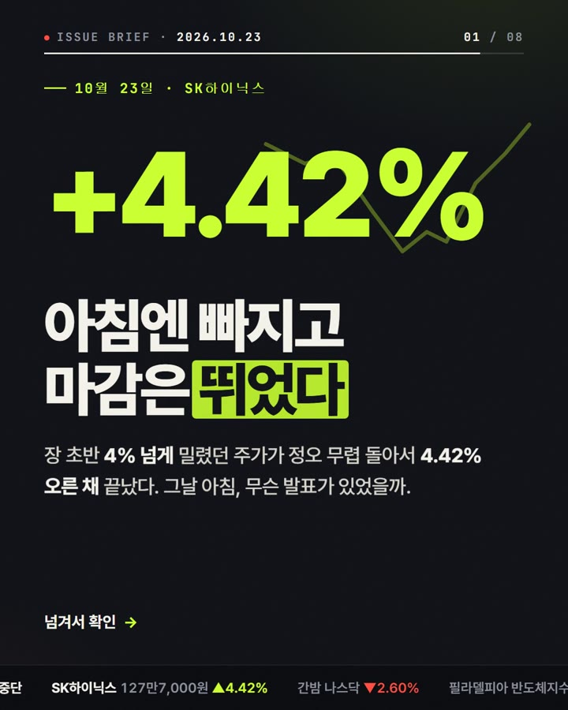
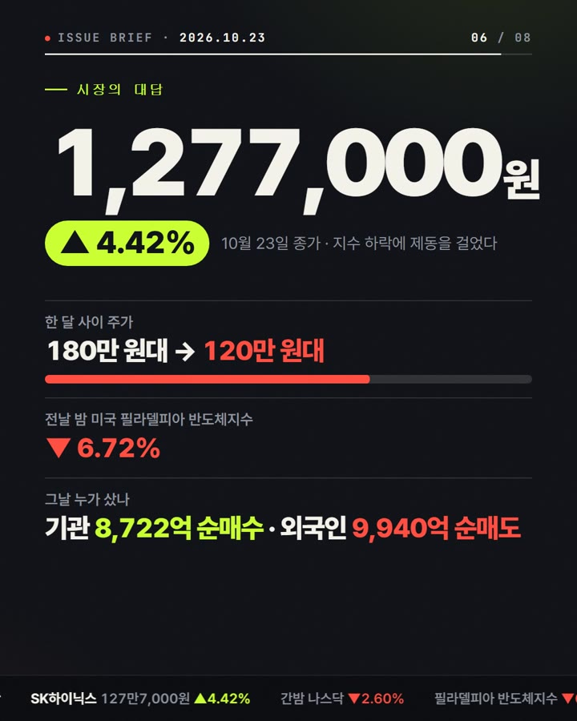

스레드에 올린 「SK하이닉스 +4.42%」 카드뉴스를 만든 방식 그대로예요. 뉴스 하나를 넣으면 글자가 튀어나오고 숫자가 올라가는 8장짜리 카드뉴스(1080×1350, 인스타·스레드 세로 비율)가 나오고, 마지막에 장마다 MP4 영상으로 뽑아요.


준비물: Claude(또는 ChatGPT) · 크롬 브라우저. 영상으로 뽑을 때만 컴퓨터에 Node.js와 ffmpeg가 필요해요(없으면 화면 녹화로도 돼요).
아래를 통째로 복사해서 AI에 넣고, 맨 아래 [기사] 자리에 기사 본문 2~4개를 붙여 넣으세요.
너는 경제 뉴스를 카드뉴스 8장으로 정리하는 편집자다.
아래 [기사]에 있는 사실만 쓴다. 기사에 없는 숫자·날짜·인용은 절대 만들지 않는다. 확인이 안 되면 그 칸을 비우고 "확인 필요"라고 적는다.
8장 구성(장마다 역할이 정해져 있다):
1장 훅 — 가장 놀라운 숫자 하나 + 두 줄 제목(예: "아침엔 빠지고 / 마감은 뛰었다") + 한 문장 궁금증("그날 아침, 무슨 발표가 있었을까")
2장 무슨 일 — 사건을 한 줄 굵은 제목 + 두 문장 설명. 회사·기관의 공식 설명은 큰따옴표 인용.
3장 누구 — 등장하는 회사·사람의 관계를 3~5칸 구조도(위→아래)로. 칸마다 이름 + 한 단어 설명.
4장 왜 시끄러웠나 — 쟁점 한 단어(예: "중복상장") + 쉬운 말 세 줄. 마지막 줄 핵심 단어 하나를 강조.
5장 며칠 동안 — 날짜별 타임라인 3칸(날짜 · 누가 · 한 문장 인용).
6장 시장의 대답 — 큰 숫자 1개 + 보조 숫자 2~3개(기간 변화·다른 지수·매수 주체).
7장 남은 숙제 — 질문형 제목 두 줄 + 근거 숫자 1~2개 + 공식 발언 인용 1개.
8장 당신의 생각 — 양쪽 입장 "A vs B" + 각 입장 한 줄 + 출처 줄(언론사 이름들).
규칙:
- 한 장 글자는 60자 안쪽. 제목은 12자 안쪽 두 줄.
- 숫자는 원문 단위 그대로(원, %, 억, 만 원대).
- 맨 아래 「티커」 한 줄용 짧은 시세 4개도 만든다(예: "SK하이닉스 127만7,000원 ▲4.42%").
출력 형식: 장 번호별로 [큰 숫자/라벨] [제목] [본문] [강조할 단어] [인용] 칸을 나눠서.
[기사]
(여기에 기사 본문 붙여 넣기)1단계 대본 아래에 이어서 넣으세요. 결과는 HTML 파일 하나예요. cards.html로 저장해서 크롬으로 열면 카드가 움직여요.
위 8장 대본으로 "키네틱 카드뉴스" HTML 파일 하나를 만들어 줘. 외부 파일 없이 한 파일, 바로 크롬에서 열려야 한다.
[판형] 카드 8장, 각 1080×1350px. 화면에는 세로로 차례대로 보이고, 주소 끝에 ?render=3 처럼 번호를 붙이면 그 카드 한 장만 화면 가득 보이게 해 줘.
[디자인 — 이 값 그대로]
- 배경 #0b0d12(먹색), 글자 #f3f1ea(종이색), 흐린 글자 #8b909c
- 강조 #c8ff2e(라임 — 오른 숫자·핵심 단어), 경고 #ff4a3d(빨강 — 내린 숫자·취소선)
- 글꼴: 본문 Pretendard Variable(jsdelivr CDN), 인용은 Noto Serif KR 700, 숫자·날짜 라벨은 JetBrains Mono(Google Fonts)
- 큰 숫자는 200px 안팎·굵기 900·자간 -0.07em, 제목은 96px 안팎 두 줄
- 모든 카드 맨 아래 높이 86px 시세 티커 띠(대본의 티커 4개를 반복해서 왼쪽으로 천천히 흐르게, 오른 값 라임·내린 값 빨강)
- 카드 왼쪽 위에 작은 라벨(장 번호 · 날짜 · 회사명, 모노 글꼴)
[움직임 — GSAP 3.13.0(jsdelivr CDN)]
- 카드마다 gsap.timeline({ paused: true }) 하나. 한 장은 5~7초.
- 제목은 글자 한 자씩 아래에서 솟아오르기(글자를 span으로 쪼갤 때 공백도 보존)
- 큰 숫자는 0에서 목표값까지 세어 올라가기(쉼표·소수점·% 유지)
- 1장: 주가 꺾은선을 선 그리기(stroke-dashoffset)로, 처음엔 빨강 → 반등 지점부터 라임
- 2장: 사라진 계획은 빨간 취소선이 그어지며 흐려지기
- 3장: 구조도 칸이 위에서부터 하나씩 나타나고 칸 사이 선이 이어지기
- 5장: 타임라인 점이 하나씩 켜지며 인용이 타자 치듯 나오기
- 8장: "A vs B" 두 칸이 양쪽에서 밀려 들어오기
- 마지막 1.6초는 멈춘 채 유지
[영상 뽑기용 장치 — 꼭 넣기]
- ?render=n 모드에서 document.fonts.ready를 기다린 뒤 window.__ready = true
- window.__total = 그 카드 타임라인 길이(초)
- window.__seek = (t) => { tl.seek(t, false); } ← 아무 값도 돌려주지 말 것(타임라인 객체를 돌려주면 자동화 도구가 멈춘다)
- 0초 장면에도 그 카드 제목이 이미 보이게 해 줘(SNS 미리보기가 첫 장면이라, 검은 화면으로 시작하면 넘기기 전엔 내용이 안 보인다). 처음엔 흐릿하게 보이다가 움직임으로 또렷해지는 식으로.
설명 없이 HTML 코드만 줘.확인할 것: 크롬에서 열어 8장이 다 움직이는지, cards.html?render=1로 열면 1장만 꽉 차게 보이는지.
cards.html?render=1 ~ ?render=8을 하나씩 열고 윈도우 Win+Alt+R(게임바) 또는 맥 Cmd+Shift+5로 녹화 → 1080×1350로 잘라 쓰기.
Node.js 스크립트 render.cjs를 만들어 줘.
- 사용: node render.cjs cards.html 출력폴더
- playwright(chromium)로 1080×1350 창을 열고 카드 1~8을 차례로 "cards.html?render=n"으로 연다.
- window.__ready === true가 될 때까지 기다리고, window.__total(초)을 읽는다.
- 초당 30프레임: 프레임마다 page.evaluate(t => window.__seek(t), 프레임/30) 후 jpeg 스크린샷(quality 95)
- 스크린샷을 ffmpeg 표준입력으로 흘려(-f image2pipe -framerate 30 -c:v mjpeg -i -) libx264, yuv420p, crf 17, +faststart로 card01.mp4 ~ card08.mp4 저장
- 끝나면 8개를 이어 붙인 full.mp4도 만든다(ffmpeg concat).
- 페이지 오류(pageerror)가 있으면 마지막에 출력.
설치 명령(npm i playwright, npx playwright install chromium)도 같이 알려 줘.실행: node render.cjs cards.html video → video/card01.mp4~card08.mp4, full.mp4
스레드·인스타 모두 영상 8개를 묶음(캐러셀)으로 올리면 한 장씩 넘겨 봐요. 한 편으로 올리고 싶으면 full.mp4(약 45초).
| 증상 | 이렇게 다시 말하기 |
|---|---|
| 한글 글꼴이 기본 글꼴로 나옴 | "?render 모드에서 document.fonts.ready와 Pretendard 로드를 기다린 뒤에 __ready를 켜 줘" |
| 글자 쪼개기에서 띄어쓰기가 사라짐 | "split할 때 공백 문자는 span으로 남겨 줘" |
| 영상 뽑다가 멈춤 | "__seek가 아무 값도 돌려주지 않게 { tl.seek(t,false); } 로 바꿔 줘" |
| 미리보기가 검은 화면 | "0초 장면에도 제목이 흐릿하게 보이게 시작 상태를 바꿔 줘" |
| 숫자가 소수점에서 튐 | "카운트업은 소수 자릿수를 목표값과 같게 고정해 줘" |
| 기사에 없는 숫자가 들어감 | 1단계로 돌아가 "기사에 없는 숫자는 '확인 필요'로 바꿔 줘" |